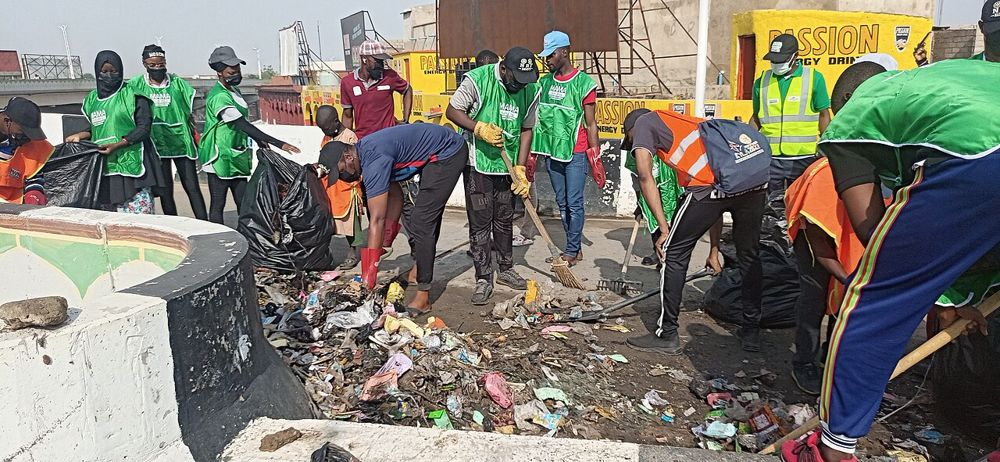

🌍 בוקר טוב אירועים מיוחדים
יום הניקיון העולמי: מיליוני מתנדבים ומתנדבות ביותר מ־192 מדינות
24 בספטמבר 2026 ממהדורה 1 · 8 באוקטובר 2026
ב־20 בספטמבר 2026 התקיים בפעם התשיעית יום הניקיון העולמי. לפי נתונים ראשוניים שפרסמו המארגנים, מיליוני אנשים ביותר מ־192 מדינות וטריטוריות יצאו לנקות חופים, פארקים, רחובות ונהרות.
בברזיל הגיע המסר של היום ליותר ממיליון תלמידים ותלמידות. באי קטן ולא מיושב בים הצפוני אספו 27 מתנדבים ומתנדבות כ־15 מטר מעוקב של פסולת שנסחפה לחוף, הוכחה לכך שלפסולת אין גבולות. בסנגל ניקו את כל 19 הרשויות של העיר דקאר, לקראת אולימפיאדת הנוער שתיערך שם.
הכול התחיל באסטוניה ב־2008, כשחמישים אלף איש ניקו את כל המדינה בחמש שעות. המסר השנה: אם לפחות 5% מאנשי העולם ישתתפו, שמירה על הסביבה תהפוך להרגל של כולם. והצעד הבא, לפי המארגנים, הוא לייצר פחות פסולת מלכתחילה.
💬 לחשוב ולשוחח: איזה מקום קרוב אליכם הייתם רוצים ורוצות לנקות או לשפר יחד? מה צריך כדי להתחיל?
מקורות וקרדיטים
📰 מקורות המידע
- Millions of People, One Planet: World Cleanup Day 2026 Moves from Cleaning Up to Changing Habits · World Cleanup Day (24 בספטמבר 2026)
📖 להעמיק ולקרוא עוד
- האתר הרשמי (אנגלית) · World Cleanup Day
- World Cleanup Day · Wikipedia (אנגלית)
תמונה: Abike25 · רישיון: CC BY-SA 4.0 · מקור התמונה
הידיעה נכתבה במילים שלנו על סמך המקורות.